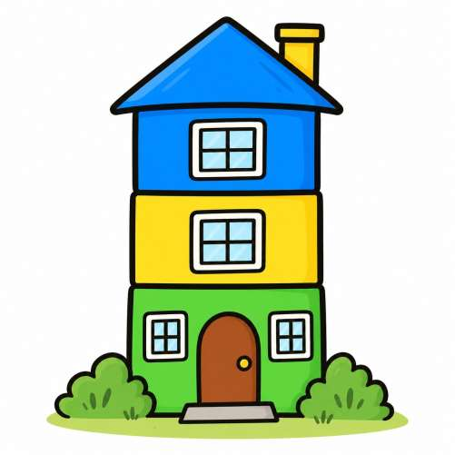

Construimos casa de colores con policubos y descubrimos cuántas podemos crear siguiendo distintas reglas.

Vamos a construir casitas de colores. Cada casita estará formada por varios pisos, colocados uno encima de otro. Para cada piso podemos elegir uno de varios colores.Podemos repetir los colores en una misma casita.
Dos colores y dos pisos
Supongamos que tenemos piezas de color azul y verde.
¿Cuántas casitas diferentes podemos construir?
Dibuja o construye todas las posibilidades.
Organízalas de manera que no repitas ninguna.
Explica cómo sabes que no te falta ninguna posibilidad.
Añadimos un piso
Seguimos teniendo dos colores, pero ahora las casitas tienen tres pisos.
¿Cuántas casitas diferentes podemos construir?
Intenta aprovechar lo que descubriste en el apartado anterior. ¿Y si tuvieran cuatro o cinco pisos?
Añadimos un color
Ahora tenemos tres colores: azul, amarillo y verde.
Empieza construyendo casitas de dos pisos. Después, investiga qué ocurre cuando tienen tres o cuatro pisos.
Busca una forma de calcular el número de casitas sin tener que dibujarlas todas.
El caso general
Imagina que disponemos de n colores diferentes y queremos construir casitas de m pisos.
¿Cuántas casitas diferentes podremos construir?
Intenta encontrar una regla que permita calcularlo y explica tu razonamiento.
Ampliación: ¿y si el orden de los pisos no importa?
Hasta ahora hemos considerado diferentes, por ejemplo, estas dos casitas:
Verde – azul – amarillo.
Verde – amarillo – azul.
Pero vamos a cambiar las reglas: dos casitas serán iguales si tienen los mismos colores, aunque aparezcan en distinto orden.
Utilizando los colores azul, amarillo y verde, ¿cuántas casitas diferentes podemos construir si tienen tres pisos?
Puedes organizarlas según los colores que aparecen:
Los tres pisos del mismo color.
Dos pisos de un color y uno de otro.
Los tres pisos de colores diferentes.
Explica cómo sabes que has encontrado todas las posibilidades.
Buscamos una regla general
Investiga qué ocurre cuando tenemos n colores y queremos construir casitas de m pisos, pero el orden de los colores no importa.
¿Puedes encontrar una forma de calcular cuántas casitas diferentes hay sin necesidad de dibujarlas todas?
Pista: ahora no importa el orden en el que aparecen los colores, sino cuántas veces aparece cada uno.
Actividad encontrada en el twitter de Carles Granell.
Inicio